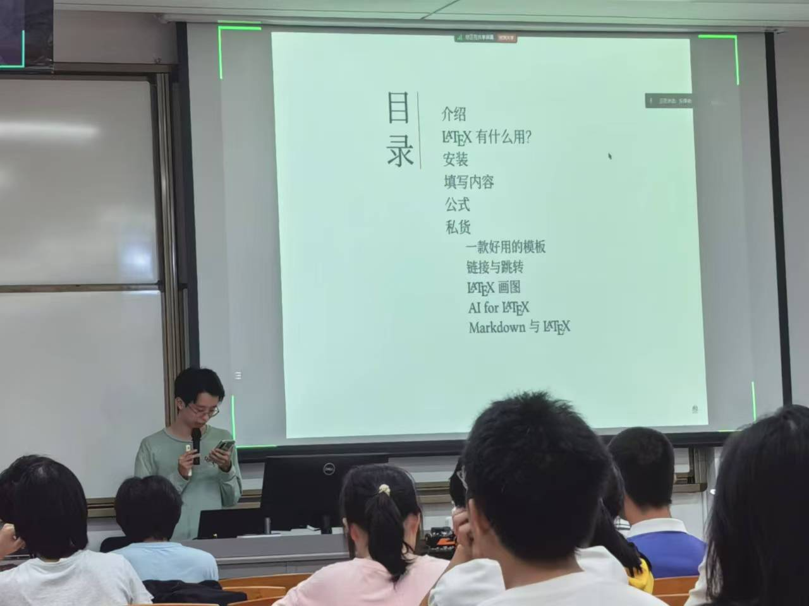

LaTeX 高级入门讲座

LaTeX讲座内容目录 - 涵盖从基础到高级的全面知识

讲座现场 - 与同学们分享LaTeX排版技巧
摘要
为新生介绍LaTeX的基础知识，如LaTeX的基础功能，安装方法，使用技巧等等。本活动由SPS物理协会与笃行工作室联合举办。
LaTeX是一个高质量的排版系统，特别适合用于学术论文、书籍和技术文档的排版。在这个讲座中，我们系统地涵盖了：
- 介绍 - LaTeX的基本概念和优势
- LaTeX有什么用？ - 应用场景和实际价值
- 安装 - 环境配置和软件安装
- 填写内容 - 文档结构和基本命令
- 公式 - 数学公式的编写技巧
- 私货 - 实用技巧和最佳实践
- 链接与跳转 - 交叉引用和导航
- LaTeX画图 - TikZ绘图功能
- AI for LaTeX - 现代化工具辅助
- Markdown与LaTeX - 两种格式的结合使用
讲座现场气氛热烈，同学们积极参与互动，共同探讨LaTeX在学术写作中的强大功能。
📅 活动信息
详细信息
日期
2024年11月15日 19:00 — 22:00
活动
LaTeX 高级入门讲座
地点
392栋301黄传经堂
新港西路135号
广州市, 广东省 510275
中国
相关资源
讲座内容
本次讲座系统地介绍了LaTeX的各个方面，从基础安装到高级应用，为同学们提供了全面的学习指导。讲座内容丰富实用，涵盖了学术写作中最常用的功能和技巧。
更多活动详情，包括图片库等页面元素，可以添加到此页面的正文中。